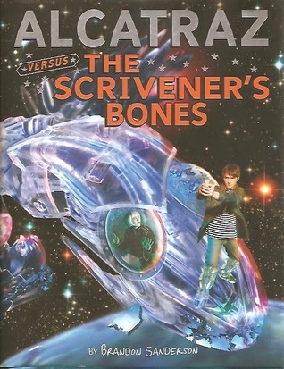

"Alcatraz Versus the Scrivener's Bones"
- Read on 2012-11-11
- Rating: ️️️️️
- Format: 🎧 (7 hours 5 minutes)
As a young reader's fantasy book, it's what you might expect - a quick, simple book without much development of characters or plot line. Despite that, I really like Brandon Sanderson's books, and the magic or "Talents" or "Oculators" he has developed for this series is entertaining and quirky. Combine that with the narration by the main character, and I probably would have eaten this up when I was younger.
- Prior: Legion
- Next: The Emperor's Soul
- Read on 2018-09-03
- Rating: ️️️️️
- Format: 🎧 (7 hours 5 minutes)
Second Review
These books continue to be fun, and perfect for the YA crowd. The Smedry talents (see: super powers, for the rest of us) crack me up. I also enjoy the "author's" interjections. I wouldn't suggest reading this second book, without having read the first. The books are playful, creative, and of a style I'm not sure I've encountered. And the audio books are really well performed... so, that helps.